Prendre en main inerWeb Fluide
Ce guide vous accompagne écran par écran, de l'installation jusqu'au dossier d'audit, dans l'ordre où l'on s'en sert.
Toutes les images de ce guide sont prises dans le mode démonstration, qui contient un monde fictif : vous pouvez tout essayer sans risque, aucune donnée réelle n'est concernée.
À chaque étape, vous trouverez où cliquer, ce que vous devez voir, et — quand il y en a — le point de blocage : un garde-fou voulu par le logiciel. Ces blocages ne sont pas des pannes ; ils protègent la valeur de votre registre. Le bouton « Écouter cette étape » lit le texte à voix haute.
Vue d'ensemble
Ce que vous avez sous les yeux en ouvrant le logiciel.
inerWeb Fluide s'organise autour d'un menu à gauche : le tableau de bord, la conformité, le parc de machines, le stock de bouteilles, les mouvements de fluide, les contrôles, et tout le reste. Le tableau de bord est votre page d'accueil : il résume le parc, le stock, l'équivalent CO₂, les derniers mouvements et les alertes réglementaires du moment.
En haut à droite, un repère indique le mode en cours. Sur cette image, l'étiquette « Démo / Formation » signale que vous êtes dans le monde fictif d'essai. En usage réel, ce repère disparaît et le logiciel travaille sur vos vraies données.
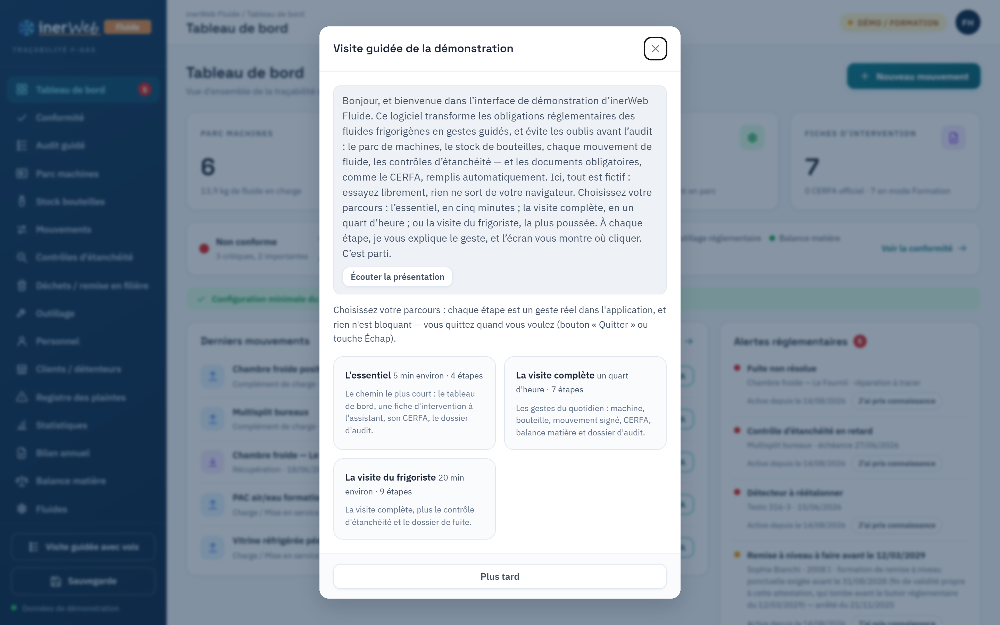
Installer le logiciel
Aucun droit administrateur requis, rien à installer sur le système.
Le logiciel se télécharge sous la forme d'un seul fichier compressé
(inerWeb-Fluide-portable.zip), depuis la page d'accueil.
Il contient déjà tout ce qu'il faut pour fonctionner : il n'y a rien d'autre à installer.
- Télécharger le fichier depuis le bouton « Télécharger » de la page d'accueil.
- Débloquer le fichier : Windows marque les fichiers venus d'Internet.
Faites un clic droit sur le
.ziptéléchargé, puis Propriétés, cochez Débloquer en bas et validez. Sans cette étape, le lanceur peut être bloqué. - Décompresser : clic droit sur le fichier, puis Extraire tout. Vous obtenez un dossier.
- Démarrer : ouvrez ce dossier et double-cliquez sur
lancer-inerweb.bat. Une fenêtre noire s'ouvre (c'est normal, c'est le moteur), puis l'application s'ouvre toute seule dans votre navigateur.
À côté du bouton de téléchargement figure une empreinte SHA-256. Vous pouvez la contrôler
sans rien installer : ouvrez une invite de commande dans le dossier du téléchargement et tapez
certutil -hashfile inerWeb-Fluide-portable.zip SHA256. L'empreinte affichée
doit être identique à celle publiée.
Tant que le logiciel tourne, la fenêtre noire reste ouverte. Pour arrêter inerWeb Fluide, il suffit de la fermer. Pour désinstaller complètement, jetez simplement le dossier.
Créer le compte administrateur
Au tout premier démarrage seulement.
La toute première fois que vous ouvrez le logiciel sur un poste, il n'existe encore aucun compte. L'application affiche donc directement, dans le navigateur, un écran « Créer le compte administrateur ». Vous n'avez rien à saisir dans la fenêtre noire : tout se passe à l'écran.
- Choisissez un nom d'utilisateur et une phrase de passe solides : ce compte est le gardien de toutes vos données.
- Notez cette phrase de passe en lieu sûr : elle protège le coffre-fort chiffré, et personne ne peut la récupérer à votre place (c'est le prix de la confidentialité).
- Une fois l'administrateur créé, vous arrivez sur le tableau de bord, prêt à travailler.
Comme rien ne part sur Internet, aucun serveur ne peut vous renvoyer un lien de réinitialisation. La phrase de passe de l'administrateur est votre unique clé : gardez-la.
Établissement et personnel
Qui détient les fluides, et qui a le droit d'intervenir.
Dans le menu Administration, vous renseignez d'abord votre établissement : raison sociale, SIRET, et surtout l'attestation de capacité et son échéance. C'est le premier cadre du CERFA, et le premier point qu'un auditeur vérifie.
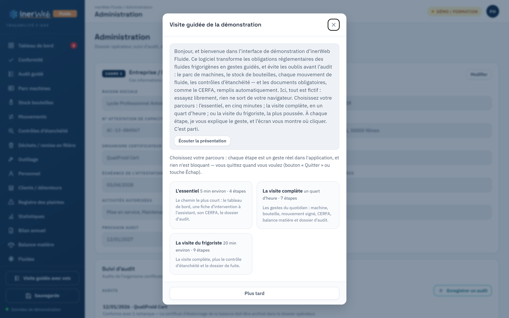
Dans le menu Personnel, vous ajoutez les intervenants. Pour chacun, le bouton Habilitations ouvre le détail des attestations d'aptitude et des mentions F-Gas (catégories 2008 et 2025). Le logiciel se sert de ces habilitations pour vous conseiller avant chaque intervention : qui a le droit de faire quoi, sur quel fluide.
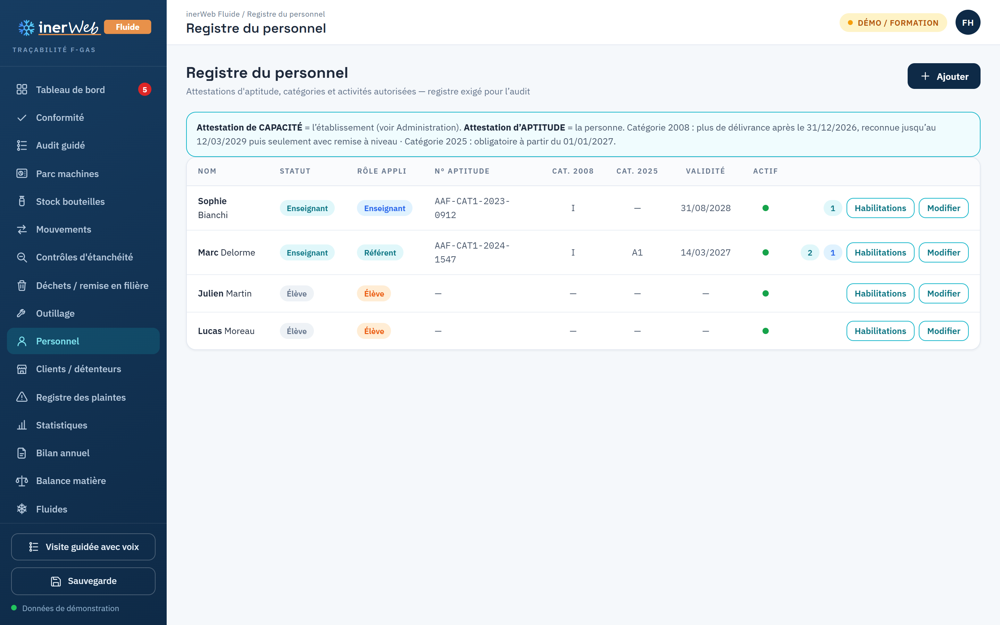
Machines, bouteilles et clients
Les objets sur lesquels porteront vos interventions.
Dans Parc machines, le bouton d'ajout crée une machine : sa désignation, son fluide, sa charge nominale. Chaque machine reçoit un code lisible et une étiquette QR que l'on peut coller dessus pour la retrouver d'un coup de téléphone.
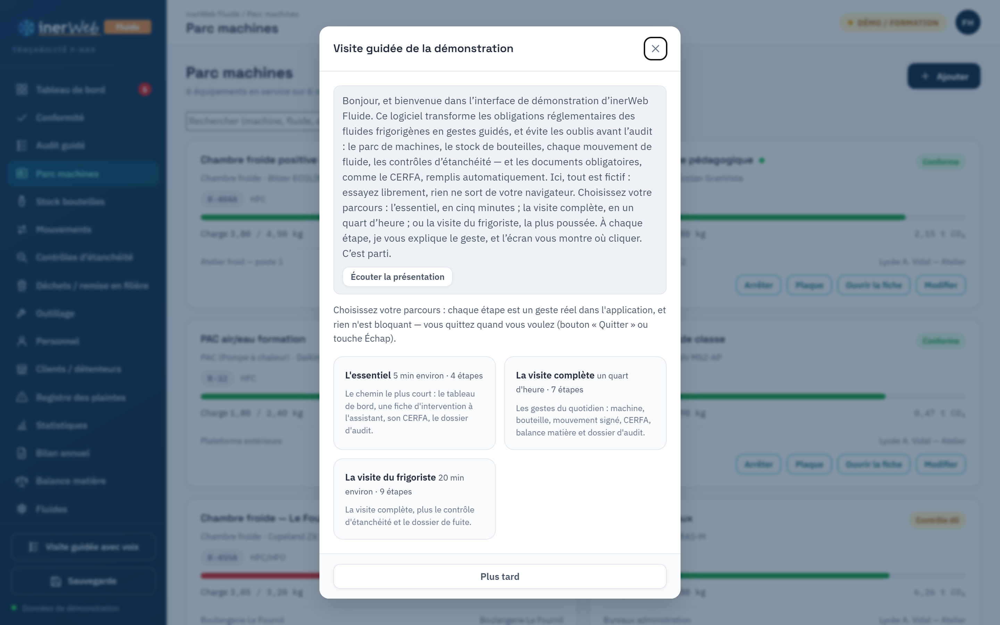
De la même façon, Stock bouteilles tient l'inventaire de vos contenants (fluide, quantité, état), et Clients / détenteurs enregistre à qui appartiennent les installations. Ces trois listes sont la matière première d'une intervention.
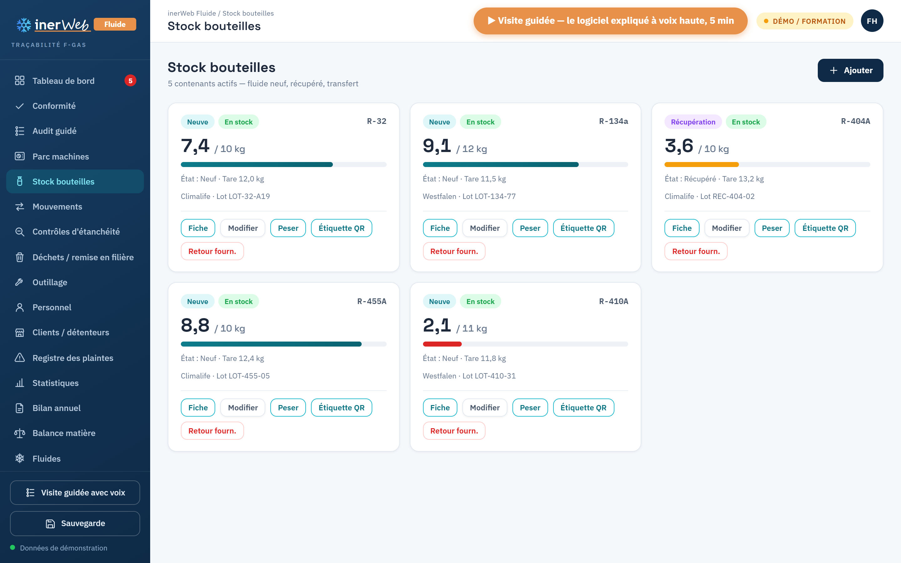
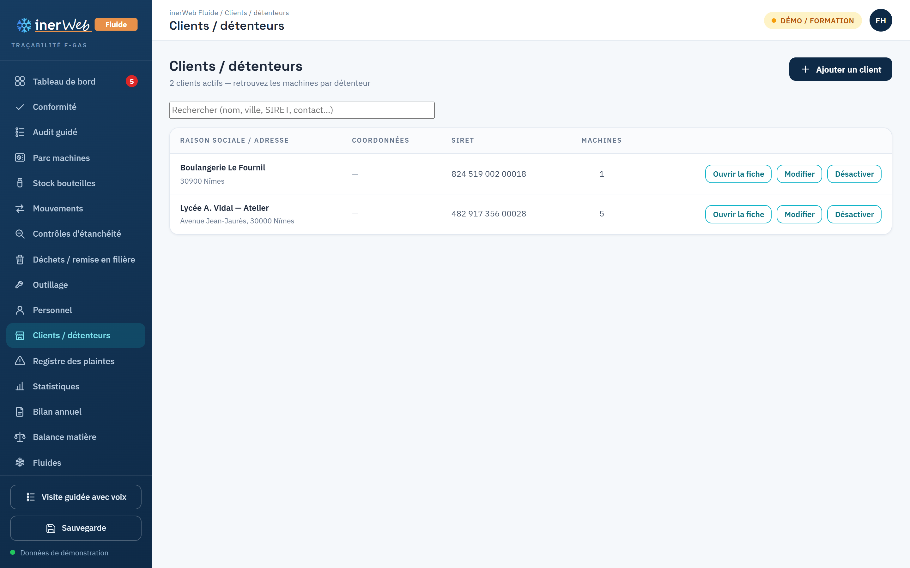
Faire une intervention
Le geste central : saisir un mouvement de fluide et éditer le CERFA.
Depuis le tableau de bord, le bouton « Nouveau mouvement » ouvre un assistant en six étapes qui vous prend par la main : le type d'intervention (charge, complément, récupération…), la machine concernée, la bouteille utilisée, la quantité, l'intervenant, puis un récapitulatif. La dernière étape est la signature, tracée directement à l'écran.
Tant que vous n'avez pas validé, le mouvement reste un brouillon : vous pouvez tout corriger. Une fois validé et signé, il rejoint le registre des Mouvements, et le bouton CERFA édite la fiche d'intervention officielle, remplie automatiquement.
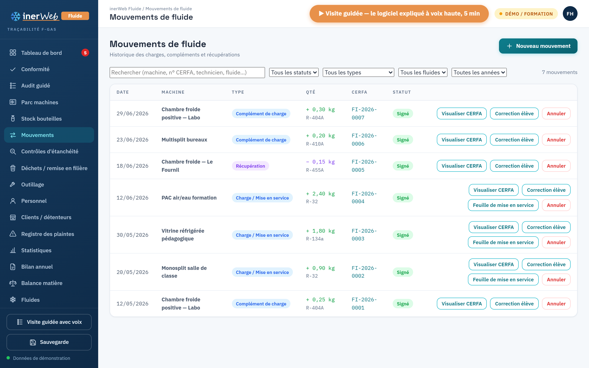
C'est voulu, et c'est ce qui fait la valeur du registre. Une fois un mouvement validé, il est scellé : impossible de le modifier ou de le supprimer. Si vous vous êtes trompé, vous ne « corrigez » pas l'écriture — vous passez une contre-écriture (une annulation qui reste visible), puis vous saisissez la bonne. Comme en comptabilité : on ne gomme pas, on contrepasse. Toute tentative d'altération se verrait.
Contrôles d'étanchéité et fuites
Suivre les échéances et fermer proprement une fuite.
Le menu Contrôles d'étanchéité enregistre chaque contrôle et suit les échéances : le logiciel vous alerte quand un contrôle arrive à terme. Lorsqu'une fuite est détectée, un dossier de fuite se constitue automatiquement, et se suit du premier constat jusqu'à la réparation vérifiée.
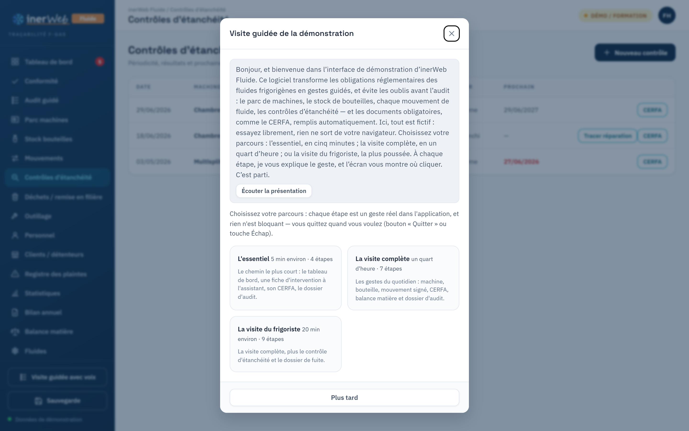
La vue Conformité consolide tout cela en un feu tricolore : vert, orange ou rouge, par domaine. C'est le premier coup d'œil avant une visite.
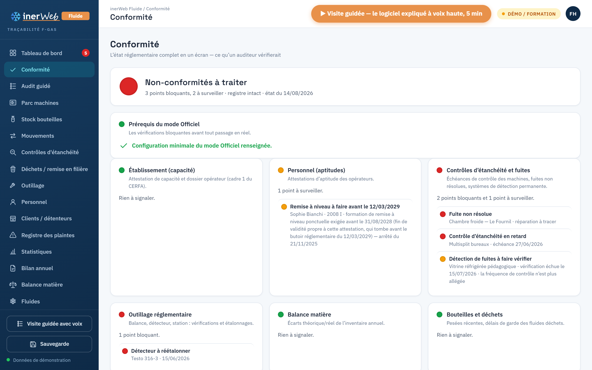
Tant qu'un dossier de fuite n'est pas refermé par un contrôle de réparation, le logiciel refuse de tracer un simple complément de charge sur cette machine : remettre du gaz dans une installation qui fuit encore n'a pas de sens réglementaire. Réparez, tracez le contrôle qui referme la fuite, et le geste redevient possible.
Balance matière et inventaire
Le bilan des fluides, calculé tout seul.
La Balance matière fait, pour chaque fluide, le compte des entrées et des sorties : ce qui est arrivé, ce qui a été chargé, récupéré, ce qui reste. Vous n'avez rien à calculer, le logiciel s'en charge à partir des mouvements validés.
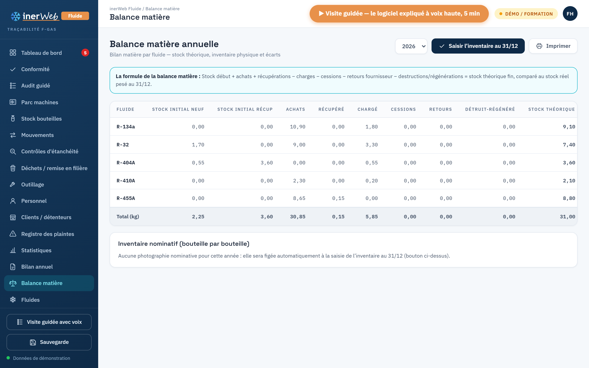
Le Bilan annuel prépare l'inventaire nominatif de fin d'année et l'équivalent CO₂ du parc — les chiffres attendus lors d'un contrôle.
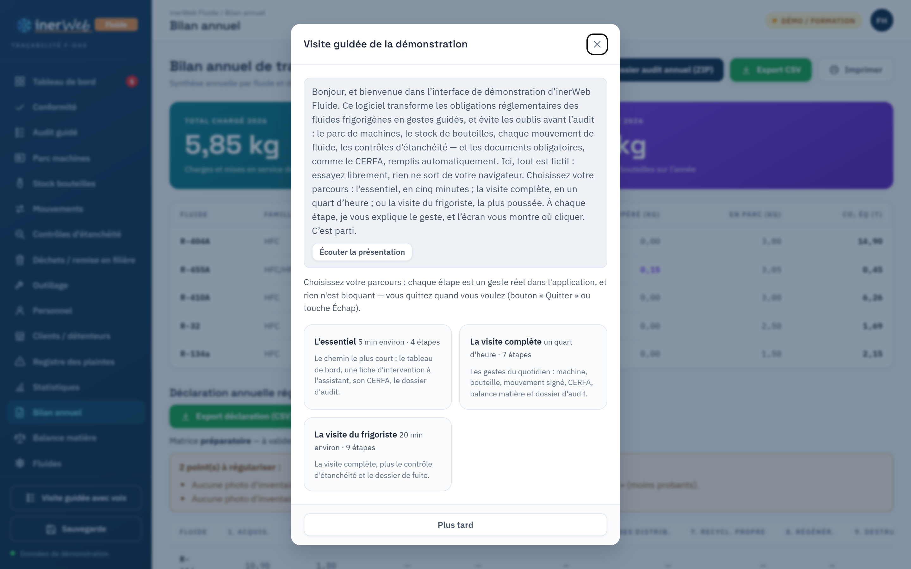
Le dossier d'audit
Le moment où l'inspecteur arrive.
Le menu Audit guidé déroule un parcours en neuf étapes ordonnées, exactement dans l'ordre où un auditeur vérifie les choses : l'établissement, le personnel, l'outillage, les contrôles, la balance… À chaque étape, le logiciel vous dit ce qui est au vert et ce qui reste à traiter, avec un bouton pour ouvrir directement l'écran concerné.
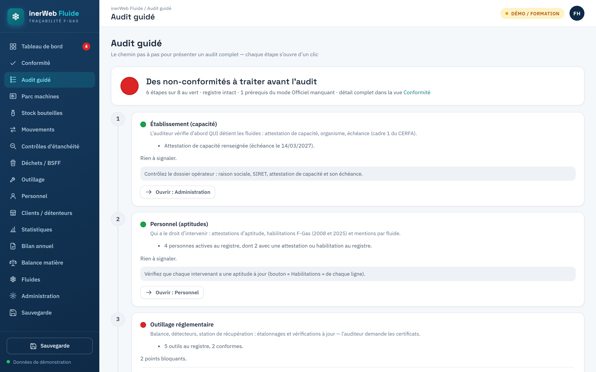
Quand tout est prêt, le logiciel exporte un dossier d'audit scellé : une archive accompagnée d'un vérificateur autonome, qui fonctionne hors ligne et permet à n'importe qui de contrôler que le dossier n'a pas été retouché après coup.
inerWeb Fluide met en œuvre la lecture de la réglementation par son auteur, en mode conseil : présentez-le comme votre outil de suivi et votre lecture de l'arrêté, pas comme une décision réglementaire opposable à votre place.
Sauvegarder et restaurer
L'exigence numéro un : ne rien perdre.
Le menu Sauvegarde crée, en un clic, une copie complète et chiffrée de toutes vos données, à ranger sur une clé USB ou un disque externe. La restauration remet cette copie en place — utile en cas de changement de poste ou de mauvaise manipulation.
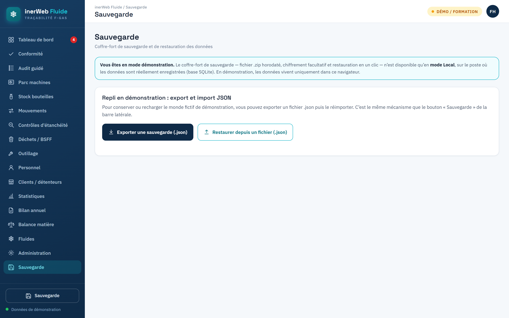
Une sauvegarde régulière sur un support externe est la meilleure protection de votre registre. Comme tout est local, c'est vous — et vous seul — qui gardez la maîtrise de vos données.
Professeur et élève
Des droits séparés, et un mode formation.
inerWeb Fluide distingue les rôles : un professeur (ou référent) peut valider et administrer ; un élève, lui, prépare et s'exerce, mais ne peut pas valider une écriture officielle ni s'attribuer une habilitation. Le mode formation permet de s'entraîner sur un jeu de données d'exercice, sans toucher au registre réel.
Les droits ne sont pas qu'un affichage : le serveur refuse toute action réservée si le rôle ne l'autorise pas. Un élève ne peut ni valider un mouvement, ni s'attribuer une habilitation, ni importer des données. C'est ce qui rend l'outil sûr en classe, avec de vrais élèves connectés.
Animations et projets éducatifs
Les modules interactifs et les documents qui accompagnent inerWeb Fluide en classe.
inerWeb Fluide n'est pas qu'un registre : c'est aussi un support de cours. Voici les animations et projets éducatifs du même domaine — froid, fluides frigorigènes, habilitation — plus les documents à imprimer. Tous s'ouvrent dans le navigateur, sans compte et sans installation.
RESSOURCES, en bas
de cette page : { genre: 'parcours', titre: '…', lien: 'https://…' }.
Les genres disponibles sont parcours, outil et support.
Cette liste ne reprend que les projets du domaine froid et fluides — le catalogue complet est
sur le tableau de bord inerWeb Édu.
Ces ressources sont sous la même licence que le logiciel — PolyForm Noncommercial : libres et gratuites pour tout établissement d'enseignement, licence distincte pour un usage commercial. Les symboles frigorifiques du parcours viennent de la collection QElectroTech, sous CC BY 3.0.
Tous les points de blocage
Ce qui bloque, pourquoi, et comment débloquer — en un coup d'œil.
Ces blocages sont voulus. Ce ne sont pas des pannes : ce sont les garde-fous qui font qu'un registre inerWeb Fluide tient devant un contrôle. Voici les principaux et la façon de les lever.
- « Cette écriture ne peut plus être modifiée. » — Un mouvement validé est scellé. Pour corriger, passez une contre-écriture d'annulation, puis saisissez la bonne écriture.
- « Complément de gaz impossible : fuite ouverte. » — Réparez, tracez le contrôle de réparation qui referme le dossier de fuite, puis reprenez le complément.
- « Action réservée : rôle insuffisant. » — Vous êtes connecté en élève. Cette action (valider, habiliter, importer) est réservée au professeur ou à l'administrateur.
- « Mode Officiel indisponible. » — Un prérequis manque, par exemple un détecteur de fuite dont l'étalonnage n'est plus à jour. Remettez le prérequis en ordre dans l'écran concerné ; le tableau de bord vous dit lequel.
- « Mouvement incohérent sur la bouteille. » — Le sens (entrée / sortie) ou le type de mouvement ne correspond pas à l'état de la bouteille. Vérifiez la bouteille choisie.
Le mode démonstration contient un monde fictif complet : rejouez chaque étape de ce guide, provoquez volontairement les blocages pour bien les comprendre, puis passez au mode réel en confiance. Rien de ce que vous faites en démonstration ne touche vos vraies données.
inerWeb Fluide — © 2026 Franck Henninot · LP Antoine Vidal, Nîmes · inerweb.fh@gmail.com · Licence PolyForm Noncommercial (gratuit pour l'enseignement). · Retour à l'accueil